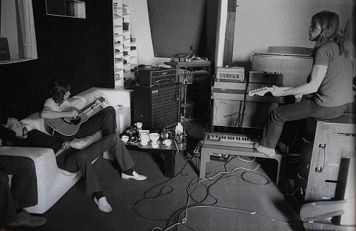
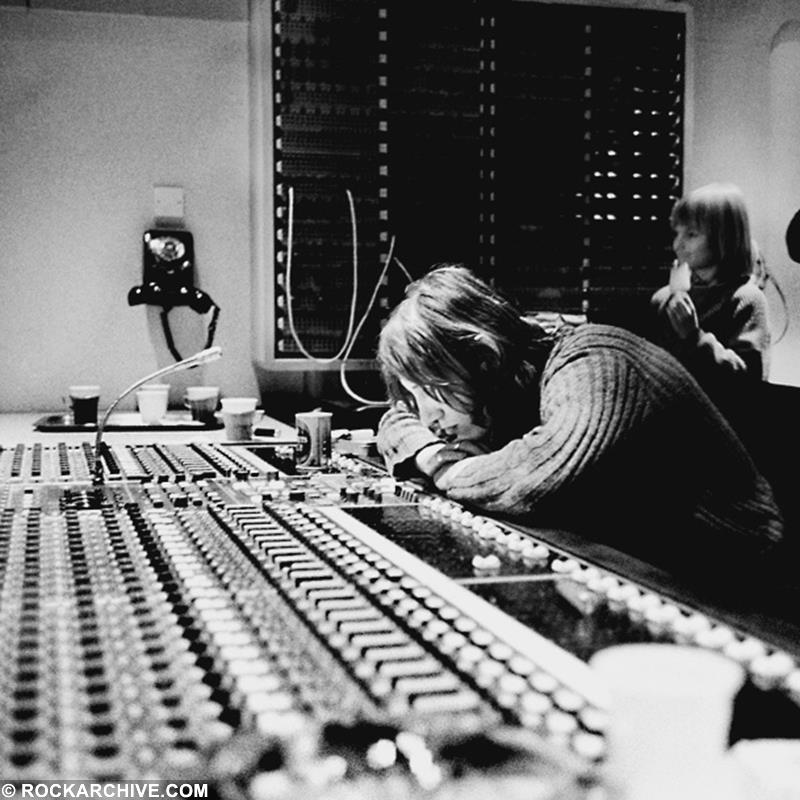
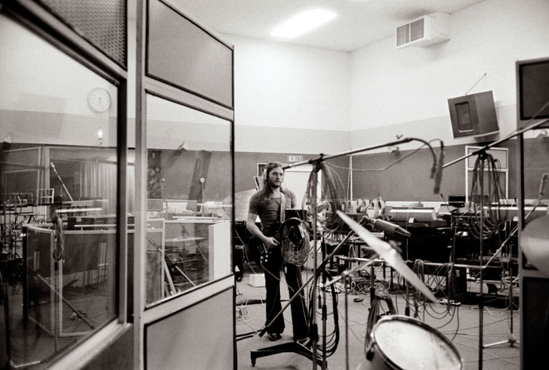

Band
Photo of the band - The Wall era
Pink Floyd are an English rock band formed in London in 1965. Gaining an early following as one of the first British psychedelic groups, they were distinguished by their extended compositions, sonic experiments, philosophical lyrics and elaborate live shows. They became a leading band of the progressive rock genre, cited by some as the greatest progressive rock band of all time.
Pink Floyd were founded in 1965 by Syd Barrett (guitar, lead vocals), Nick Mason (drums), Roger Waters (bass guitar, vocals) and Richard Wright (keyboards, vocals). Under Barrett's leadership, they released two hit singles, "Arnold Layne" and "See Emily Play", and the successful debut album The Piper at the Gates of Dawn (1967). The guitarist and vocalist David Gilmour joined in December 1967; Barrett left in April 1968 due to deteriorating mental health. Waters became the primary lyricist and thematic leader, devising the concepts behind Pink Floyd's most successful albums, The Dark Side of the Moon (1973), Wish You Were Here (1975), Animals (1977) and The Wall (1979). The musical film based on The Wall, Pink Floyd – The Wall (1982), won two BAFTA Awards. Pink Floyd also composed several film scores.
Following personal tensions, Wright left Pink Floyd in 1981, followed by Waters in 1985. Gilmour and Mason continued as Pink Floyd, rejoined later by Wright. They produced the albums A Momentary Lapse of Reason (1987) and The Division Bell (1994), backed by major tours, before entering a long hiatus. In 2005, all but Barrett reunited for a performance at the global awareness event Live 8. Barrett died in 2006, and Wright in 2008. The last Pink Floyd studio album, The Endless River (2014), was based on unreleased material from the Division Bell recording sessions. In 2022, Gilmour and Mason reformed Pink Floyd to release the song "Hey, Hey, Rise Up!" in protest at the Russian invasion of Ukraine.
By 2013, Pink Floyd had sold more than 250 million records worldwide, making them one of the best-selling music artists of all time. The Dark Side of the Moon and The Wall were inducted into the Grammy Hall of Fame,[1] and these albums and Wish You Were Here are among the best-selling albums of all time. Four Pink Floyd albums topped the US Billboard 200, and five topped the UK Albums Chart. Pink Floyd's hit singles include "Arnold Layne" (1967), "See Emily Play" (1967), "Money" (1973), "Another Brick in the Wall, Part 2" (1979), "Not Now John" (1983), "On the Turning Away" (1987) and "High Hopes" (1994). They were inducted into the US Rock and Roll Hall of Fame in 1996 and the UK Music Hall of Fame in 2005. In 2008, Pink Floyd were awarded the Polar Music Prize in Sweden for their contribution to modern music.
The Wall
The Wall is the eleventh studio album by the English rock band Pink Floyd, released on 30 November 1979 by Harvest/EMI and Columbia/CBS Records. It is a rock opera about Pink, a jaded rock star who constructs a 'wall' of social isolation. The album was a commercial success, topping the US charts for 15 weeks and reaching number three in the UK. It initially received mixed reviews from critics, many of whom found it overblown and pretentious, but later received accolades as one of the greatest albums of all time.
The bassist, Roger Waters, conceived The Wall during Pink Floyd's 1977 In the Flesh tour, modelling the character of Pink after himself and Pink Floyd's former member Syd Barrett. Recording spanned from December 1978 to November 1979. The producer Bob Ezrin helped to refine the album's concept and bridge tensions during recording, as the band members were struggling with personal and financial issues at the time. The Wall was the last album to feature Pink Floyd as a quartet; the keyboardist, Richard Wright, was fired by Waters during production but stayed on as a salaried musician.
| No. | Title | Lead vocals | Length |
|---|---|---|---|
| 1. | "In the Flesh?" | 3:16 | |
| 2. | "The Thin Ice" |
|
2:27 |
| 3. | "Another Brick in the Wall, Part 1" | 3:11 | |
| 4. | "The Happiest Days of Our Lives" | 1:46 | |
| 5. | "Another Brick in the Wall, Part 2" |
|
3:59 |
| 6. | "Mother" |
|
5:32 |
| Total length: | 20:11 | ||
| No. | Title | Writer(s) | Lead vocals | Length |
|---|---|---|---|---|
| 1. | "Goodbye Blue Sky" | Gilmour | 2:45 | |
| 2. | "Empty Spaces" | 2:10 | ||
| 3. | "Young Lust" |
|
Gilmour | 3:25 |
| 4. | "One of My Turns" | 3:41 | ||
| 5. | "Don't Leave Me Now" |
|
4:08 | |
| 6. | "Another Brick in the Wall, Part 3" | 1:18 | ||
| 7. | "Goodbye Cruel World" | 1:16 | ||
| Total length: | 18:43 | |||
| No. | Title | Writer(s) | Lead vocals | Length |
|---|---|---|---|---|
| 1. | "Hey You" |
|
4:40 | |
| 2. | "Is There Anybody Out There?" | 2:44 | ||
| 3. | "Nobody Home" | 3:26 | ||
| 4. | "Vera" | 1:35 | ||
| 5. | "Bring the Boys Back Home" | 1:21 | ||
| 6. | "Comfortably Numb" |
|
|
6:23 |
| Total length: | 20:09 | |||
| No. | Title | Writer(s) | Lead vocals | Length |
|---|---|---|---|---|
| 1. | "The Show Must Go On" | Gilmour | 1:36 | |
| 2. | "In the Flesh" | 4:15 | ||
| 3. | "Run Like Hell" |
|
4:20 | |
| 4. | "Waiting for the Worms" |
|
4:04 | |
| 5. | "Stop" | 0:30 | ||
| 6. | "The Trial" |
|
5:13 | |
| 7. | "Outside the Wall" | 1:41 | ||
| Total length: | 21:39 80:42 | |||
Recording sessions
The Wall was recorded in several locations. In France, Super Bear Studios was used between January and July 1979, and Waters recorded his vocals at the nearby Studio Miraval. Michael Kamen supervised the orchestral arrangements at CBS Studios in New York, in September.[34] Over the next two months the band used Cherokee Studios, Producers Workshop and The Village Recorder in Los Angeles. A plan to work with the Beach Boys at the Sundance Productions studio in Los Angeles was cancelled (although Beach Boys member Bruce Johnston does sing backing vocals on "In the Flesh?", "The Show Must Go On", the side 4 version of "In the Flesh", and "Waiting for the Worms") .[35][36]
James Guthrie, recommended by previous Floyd collaborator Alan Parsons, arrived early in the production process.[37] He replaced engineer Brian Humphries, who was emotionally drained by his five years with the band.[38] Guthrie was hired as a co-producer, but was initially unaware of Ezrin's role: "I saw myself as a hot young producer ... When we arrived, I think we both felt we'd been booked to do the same job."[39] The early sessions at Britannia Row were emotionally charged, as Ezrin, Guthrie and Waters each had strong ideas about the direction the album would take. Relations within the band were at a low ebb, and Ezrin became an intermediary between Waters and the rest of the band.[40]
Ezrin's poor punctuality caused problems with the tight schedule dictated by Waters.[44] Mason found Ezrin's behaviour "erratic", but used his elaborate and unlikely excuses for his lateness as ammunition for "tongue-in-cheek resentment".[43] Ezrin's share of the royalties was less than the rest of the band and he viewed Waters as a bully, especially when Waters mocked him by having badges made that read NOPE (No Points Ezrin), alluding to his lesser share.[44] Ezrin later said he had had marital problems and was not "in the best shape emotionally".
More problems became apparent when Waters's relationship with Wright broke down. The band were rarely in the studio together. Ezrin and Guthrie spliced Mason's previously recorded drum tracks together, and Guthrie worked with Waters and Gilmour during the day, returning at night to record Wright's contributions. Wright, worried about the effect that the introduction of Ezrin would have on band relationships, was keen to have a producer's credit on the album; their albums since More (1969) had credited production to "Pink Floyd".[45] Waters agreed to a trial period with Wright producing, after which he was to be given a producer's credit, but after a few weeks he and Ezrin expressed dissatisfaction with Wright's methods. A confrontation with Ezrin led to Wright working only at nights. Gilmour also expressed his annoyance, complaining that Wright's lack of input was "driving us all mad".[46] Ezrin later reflected: "it sometimes felt that Roger was setting him up to fail. Rick gets performance anxiety. You have to leave him alone to freeform, to create ..."[46]
Wright was troubled by a failing marriage and the onset of depression, exacerbated by his non-residency. While the other band members brought their children, Wright's children were older and could not join as they were attending school; he said he missed them "terribly".[47] The band's holidays were booked for August, after which they were to reconvene at Cherokee Studios in Los Angeles, but Columbia offered the band a better deal in exchange for a Christmas release of the album. Waters increased the band's workload accordingly, booking time at the nearby Studio Miraval.[48] He also suggested recording in Los Angeles ten days earlier than agreed, and hiring another keyboardist to work alongside Wright, whose keyboard parts had not yet been recorded. Wright, however, refused to cut short his family holiday in Rhodes.
Accounts of Wright's subsequent departure from the band differ. In his autobiography, Inside Out, Mason says that Waters called the band's manager, Steve O'Rourke, who was travelling to the US on the QE2, and told him to have Wright out of the band by the time Waters arrived in LA to mix the album.[50] In another version recorded by a later historian of the band, Waters called O'Rourke and asked him to tell Wright about the new recording arrangements, to which Wright responded: "Tell Roger to fuck off".[51] Wright denied this, stating that the band had agreed to record only through the spring and early summer, and that he had no idea they were so far behind schedule. Mason later wrote that Waters was "stunned and furious",[48] and felt that Wright was not doing enough.[48] Gilmour was on holiday in Dublin when he learnt of Waters's ultimatum, and tried to calm the situation. He later spoke with Wright and gave him his support, but reminded him about his minimal contributions.[52] Waters, however, insisted that Wright leave, or he would refuse to release The Wall. Several days later, worried about their financial situation and the failing interpersonal relationships within the band, Wright quit. News of his departure was kept from the music press.[53] Although his name did not appear on some editions of the album (it does appear on the UK gatefold sleeve),[54][55] he was employed as a session musician on the band's subsequent tour.[56]
By August 1979, the running order was largely complete. Wright completed his duties at Cherokee Studios aided by session musicians Peter Wood and Fred Mandel, and Jeff Porcaro played drums in Mason's stead on "Mother".[55] Mason left the final mix to Waters, Gilmour, Ezrin and Guthrie, and travelled to New York to record his debut solo album, Nick Mason's Fictitious Sports.[57] In advance of its release, technical constraints led to some changes to the running order and content of The Wall, with "What Shall We Do Now?" replaced by the similar but shorter "Empty Spaces", and "Hey You" being moved from the end of side three to the beginning. With the November 1979 deadline approaching, the band left the inner sleeves of the album unchanged.
The Wall (Movie)
Pink Floyd The Wall is a 1982 British live action/animated surrealist musical drama film directed by Alan Parker, based on Pink Floyd's 1979 album The Wall. The screenplay was written by Pink Floyd vocalist and bassist Roger Waters. The Boomtown Rats vocalist Bob Geldof made his film debut as rock star Pink, who, driven to neurosis by the pressures of stardom and traumatic events in his life, constructs an emotional and mental wall to protect himself. However, this coping mechanism eventually backfires, and Pink demands to be set free.
Like its associated album, the film is highly metaphorical, and frequently uses both visual and auditory symbols throughout its runtime. It features little dialogue, instead being driven by the music from the album throughout. The songs used in the film have several differences from their album versions, and one of the songs included, "When the Tigers Broke Free", does not appear on the album. Despite its turbulent production, the film received generally positive reviews and has an established cult following amongst Pink Floyd fans.